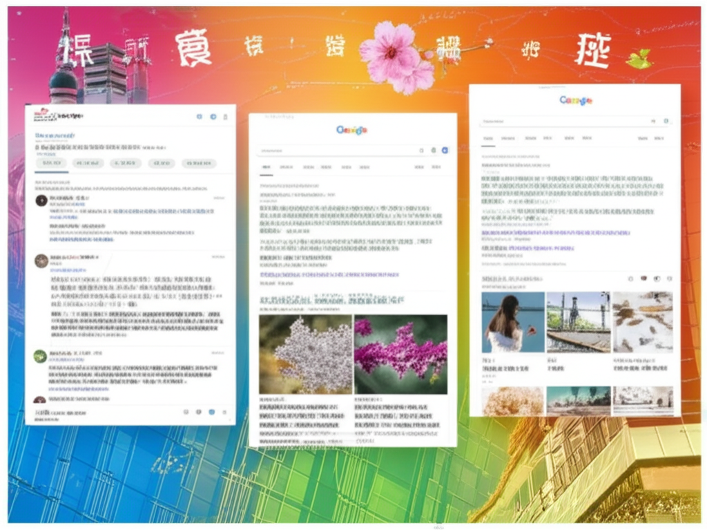

資訊摘要與分析
引言
這份資訊摘要收集了來自不同網站的新聞、文章、影片等資訊，時間跨度從2小時前到1天前不等。內容涵蓋時事新聞、財經、健康、時尚、娛樂等領域。本文將對這些資訊進行簡單的分類、分析，並提取一些關鍵信息。
主體內容
時事與新聞
- 市政新聞與社會事件： 包括新北市政府相關新聞（如蘆洲國小首頁提及的市政新聞、總質詢議題），以及越南獸醫師協會參訪瑞芳動物之家等。還有一些關注社會事件的文章，例如世界新聞網的健康最新文章，可能包含一些健康相關的社會議題。
- 國際新聞： 禁聞網關注中國人權、維權上訪等議題，同時可能涉及其他國際事件。天下雜誌的財經晚報也可能涵蓋國際經濟局勢。
- 台灣政治： 世界新聞網的政壇風雲錄板塊關注美中台關係和台灣政壇動態。
財經與商業
- 台股與財經： 天下雜誌的財經晚報報導台積電除息行情和台股表現。
- 產業趨勢： 天下雜誌也關注比亞迪可能進入台灣市場的消息。
健康與生活
- 健康資訊： 世界新聞網和ELLE Taiwan都提供健康相關的文章，包括安克生醫的AI掌超技術，以及時尚雜誌可能涉及的健康生活方式建議。
- 運動與休閒： 出現了「超慢跑」這個關鍵詞，在YouTube影片和PChome新聞中都有提及，似乎是一種流行的運動方式。 蘆洲國小首頁也可能與學童健康相關。PChome新聞還提到賞花相關資訊。
- 空氣品質： 空氣品質監測網提供空氣品質預報。
娛樂與文化
- YouTube影片： 包含Vtuber直播、韓式炸雞介紹、以及與超慢跑相關的內容。
- 時尚： ELLE Taiwan提供時尚潮流資訊。
- 書籍與購物： 博客來提供書籍和生活百貨等商品的銷售。
結論
從這些資訊來看，近期熱點包括台股市場波動、比亞迪可能進入台灣市場、以及「超慢跑」運動的流行。 新北市政府也積極推動市政建設和關注民生議題。另外，需要注意空氣品質的變化，並關注相關健康資訊。 這也展示了當前台灣社會關注的多元議題，涵蓋了政治、經濟、健康、娛樂等方面。